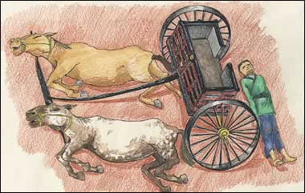

Zhou dynasty charioteerChariots were used by the aristocracy in battles and for hunting. They became a symbol of rulership. They were so important in fact that the very wealthy had their chariots (along with their horses and drivers) buried with their owners. 
A chariot burial |